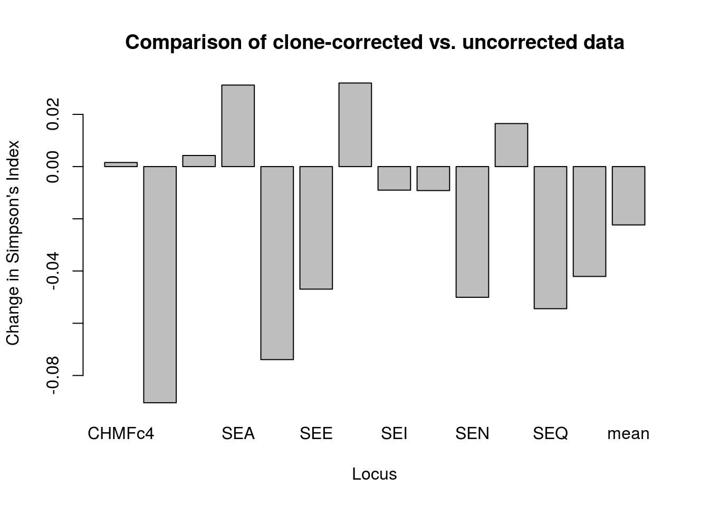
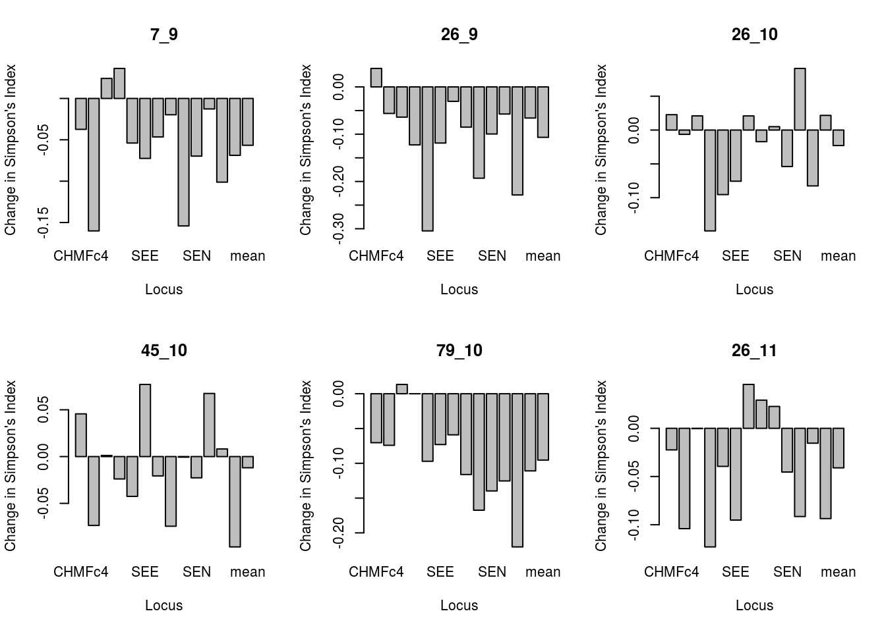

Populations are best sampled hierarchically on a range of scales from subpopulations (e.g. fields, valleys, ranges) to regions (e.g. valleys, states, countries or continents) or across time (years or decades). This approach is useful because population structure and evolutionary processes may not be discernible a priori. Most of the times we do not know if population are differentiated spatially or temporally. Thus, a combination of targeted local sampling with sampling over larger spatial or temporal scales is necessary to detect population structure over different scales, without using intense sampling throughout the entire range.
The methods implemented in poppr allow specification of which strata you want to analyze. This is a rapid way of working with subsets of your data without having to perform any data manipulation or changing the input file. In this tutorial, we will show you how to define the hierarchical structure of your data and how to specify specific levels that you might want to analyze.
For this example, we will use the monpop data set [@]. This microsatellite data consists of 13 loci for 694 individuals of the haploid fungal pathogen Monilinia fructicola that infects peach flowers and fruits in commercial orchards. The monpop population came from four trees within a single orchard (trees 26, 45, and 7). Each tree was sampled in 2009, 2010, and/or 2011. Additionally, each sample was noted as to whether it came from a blossom or a fruit. This example data set is included with the poppr package.
The steps for working with stratified data include:
The easiest way to work with stratified data is to label each sample using an underscore “_” to separate each level. This was already done for the monpop data, where each sample was coded hierarchically by tree, year, and symptom in the following format: “Tree_Year_Symptom”.
Let’s load the hierarchically labeled example data:
##
## This is a genclone object
## -------------------------
## Genotype information:
##
## 264 multilocus genotypes
## 694 haploid individuals
## 13 codominant loci
##
## Population information:
##
## 1 stratum - Pop
## 12 populations defined - 7_09_BB, 26_09_BB, 26_09_FR, ..., 45_10_FR, 26_11_BB, 26_11_FRGenotype information shows us that the data contains 264 multilocus genotypes among 694 haploid individuals with 13 loci. Population information has two items, the stratifications and the populations defined. You can think of stratifications as the index names for each of the hierarchical levels within your data (so for our data it should be Tree, Year, and Symptom). By default, however, no stratifications are defined and so this is “Pop”, which is the entire dataset of 694 individuals. Because we labeled each sample according to stratification, populations defined shows us our data has 12 groups defined: 7_09_BB, 26_09_BB, 26_09_FR, 7_09_FR, 26_10_BB, 45_10_BB, 79_10_BB, 79_10_FR, 26_10_FR, 45_10_FR, 26_11_BB, and 26_11_FR.
We imported the data that has three stratifications “Tree_Year_Symptom”. In order to analyze our data according to any combination of those three stratifications, we need to tell poppr that the 12 groups should be split by tree, year, and/or symptom. Thus, the first step is to split our data according to strata so that we can access each of the three hierarchical levels in the data. The splitStrata command is used to index the three stratifications:
##
## This is a genclone object
## -------------------------
## Genotype information:
##
## 264 multilocus genotypes
## 694 haploid individuals
## 13 codominant loci
##
## Population information:
##
## 3 strata - Tree, Year, Symptom
## 12 populations defined - 7_09_BB, 26_09_BB, 26_09_FR, ..., 45_10_FR, 26_11_BB, 26_11_FRThe
splitStratacommand only needs to be run once: right after you import your data.
After splitting the data populations are specified by stratification: “Tree Year Symptom”.
We can look at how the stratifications are distributed by using a treemap plot. This is a plot that allows us to visualize hierarchical stratifications. The function we’ll use is called treemap() from the treemap package.
The treemap() function needs only a data frame containing the strata and their respective counts. This can easily be done with the dplyr package where we will:
library("dplyr")
monstrata <- strata(monpop) %>%
group_by(Tree, Year, Symptom) %>%
summarize(Count = n())
monstrata## # A tibble: 12 x 4
## # Groups: Tree, Year [6]
## Tree Year Symptom Count
## <fct> <fct> <fct> <int>
## 1 7 9 BB 23
## 2 7 9 FR 73
## 3 26 9 BB 41
## 4 26 9 FR 132
## 5 26 10 BB 5
## 6 26 10 FR 85
## 7 26 11 BB 30
## 8 26 11 FR 97
## 9 45 10 BB 13
## 10 45 10 FR 130
## 11 79 10 BB 1
## 12 79 10 FR 64Now we can use the treemap() function to plot the data. Note that it has a lot of arguments to allow you to properly manipulate the graphic, but we will only use the very necessary components to visualize the distribution of the strata:
All the other arguments we are using here give various aesthetics. If you want to know more about how they work, you can peruse the manual for the treemap function by typing help("treemap", "treemap").
## # A tibble: 12 x 4
## # Groups: Tree, Year [6]
## Tree Year Symptom Count
## <fct> <fct> <fct> <int>
## 1 7 9 BB 23
## 2 7 9 FR 73
## 3 26 9 BB 41
## 4 26 9 FR 132
## 5 26 10 BB 5
## 6 26 10 FR 85
## 7 26 11 BB 30
## 8 26 11 FR 97
## 9 45 10 BB 13
## 10 45 10 FR 130
## 11 79 10 BB 1
## 12 79 10 FR 64## [1] "Tree" "Year" "Symptom"## [1] 23 73 41 132 5 85 30 97 13 130 1 64# Adjusting the aesthetics for the labels
label_position <- list(c("center", "top"), c("center", "center"), c("center", "bottom"))
label_size <- c(Tree = 0, Year = 15, Symptom = 15)
# Plotting, First three arguments are necessary.
treemap(dtf = monstrata, index = nameStrata(monpop), vSize = "Count",
type = "categorical", vColor = "Tree", title = "M. fructicola",
align.labels = label_position, fontsize.labels = label_size)You can also use the
itreemap()function for an interactive exploration.
Next, we analyze the data according to Tree and Year:
##
## This is a genclone object
## -------------------------
## Genotype information:
##
## 264 multilocus genotypes
## 694 haploid individuals
## 13 codominant loci
##
## Population information:
##
## 3 strata - Tree, Year, Symptom
## 6 populations defined - 7_9, 26_9, 26_10, 45_10, 79_10, 26_11To analyze the data according to Symptom:
##
## This is a genclone object
## -------------------------
## Genotype information:
##
## 264 multilocus genotypes
## 694 haploid individuals
## 13 codominant loci
##
## Population information:
##
## 3 strata - Tree, Year, Symptom
## 2 populations defined - BB, FROrder of the levels that you define is important, so if we wanted to define the symptoms according to tree, we would use the following:
##
## This is a genclone object
## -------------------------
## Genotype information:
##
## 264 multilocus genotypes
## 694 haploid individuals
## 13 codominant loci
##
## Population information:
##
## 3 strata - Tree, Year, Symptom
## 8 populations defined - BB_7, BB_26, FR_26, ..., BB_79, FR_79, FR_45Now that we have laid out the basics of manipulating data by strata, we will now apply strata for clone correction.
When dealing with clonal populations, analyses are typically conducted with and without clone correction. Clone correction is a method of censoring a data set such that only one individual per MLG is represented per population [@]. This technique is commonly used with the index of association and genotypic diversity measures since clone corrected populations approximate behavior of sexual populations. Since we want to only observe unique genotypes per population, clone correction requires specification of the stratifications at which clones should be censored. This section will show how to clone correct at a specific stratification and also compare the results with uncorrected data.
Question: Will allelic diversity increase or decrease with clone-censored data?
Using monpop as an example, if we wanted to know the diversity of alleles within each tree per year, how should we go about correcting for the clones? We use the function clonecorrect specifying the “Tree/Year” strata:
##
## This is a genclone object
## -------------------------
## Genotype information:
##
## 264 multilocus genotypes
## 278 haploid individuals
## 13 codominant loci
##
## Population information:
##
## 3 strata - Tree, Year, Symptom
## 6 populations defined - 7_9, 26_9, 26_10, 45_10, 79_10, 26_11Notice that the number of samples reduced from 694 to 278, but is still more than the number of MLGs. This indicates that there are duplicated genotypes that cross trees and years, but that’s okay because of our definition of a clone-corrected data set as having one representative genotype per population. Before we continue, we should set the original data to the same strata:
Now we can compare the diversity of alleles at each locus using Simpson’s index (\(1-D\)) as implemented in the function locus_table (Detailed in our chapter on locus based statistics). We will do this in three steps:
## summary
## locus allele 1-D Hexp Evenness
## CHMFc4 . 0.00158 0.00031 0.00160
## CHMFc5 . -0.09045 -0.09114 -0.04291
## CHMFc12 . 0.00425 0.00312 0.03873
## SEA . 0.03122 0.02983 0.08509
## SED . -0.07392 -0.07564 -0.07563
## SEE . -0.04693 -0.04770 -0.02642
## SEG . 0.03202 0.03071 0.04818
## SEI . -0.00902 -0.01053 0.03060
## SEL . -0.00919 -0.01071 -0.05397
## SEN . -0.05006 -0.05176 -0.07643
## SEP . 0.01648 0.01511 0.04087
## SEQ . -0.05442 -0.05620 -0.08707
## SER . -0.04207 -0.04374 -0.02363
## mean . -0.02235 -0.02372 -0.01085Let’s plot \(1-D\) so that we can see it better:
locus_diff <- mp - cc
# Note that I need to select the column containing Simpson's Index. That's
# labeled as "1-D".
barplot(locus_diff[, "1-D"], ylab = "Change in Simpson's Index", xlab = "Locus",
main = "Comparison of clone-corrected vs. uncorrected data")
We can see quite a difference in some loci after clone correcting based on tree in the overall data set showing that, while some loci show a decrease, many loci show an increase in allelic diversity after clone-correction.
Of course, we still want to analyze each tree/year combination separately. Instead of typing those commands above for each combination, we can write a function to do it for us.
A function can be thought of as a set of instructions that tells the computer what to do. You have been using functions before such as poppr(). A function is written like this:
fun_name is the name of the function, the R command function tells R that you are about to write a function. Arguments are variables that you will pass to the function and the curly braces ({ and }) provide the area where you write all the steps of the function. Next, we will go through an example of writing a function.
Let’s write a function that will take the harmonic mean of a vector of numbers. First, we’ll see how to do this calculation step by step before we write a function.
The harmonic mean has been utilized to estimate effective population size of a population that has undergone drastic changes in population size [@].
## [1] 126.6667## [1] 30.84833Notice that there are two steps to calculating the harmonic mean. If we wanted to calculate the harmonic mean of a lot of different vectors, this would get really repetitive. A function is a way of encapsulating a lot of instructions to reduce the number of steps (and potential errors) you would need to take in your analysis. Below, we will write a function to calculate the harmonic mean using the steps above.
Note here that the argument is x and it is a placeholder for any value you put into the function.
## [1] 126.6667## [1] 30.84833We will simply take the steps from above and turn them into a function to calculate the difference in Simpson’s diversity for a given population. In order to do that, we will need to compute three steps:
From there, we can construct the function.
plot_simp_diff <- function(pop_name, clone_corrected, un_corrected){
# Step 1: calculate diversity for clone-corrected data
cc <- locus_table(clone_corrected, pop = pop_name, info = FALSE)
# Step 2: calculate diversity for uncorrected data
uc <- locus_table(un_corrected, pop = pop_name, info = FALSE)
# Step 3: Take the difference
res <- uc - cc
# Step 4: Plot Simpson's index.
barplot(res[, "1-D"], main = pop_name, ylab = "Change in Simpson's Index", xlab = "Locus")
}Now that we have our function written, let’s gather the population names and construct a for loop that will analyze each one.
par(mfrow = c(2, 3)) # Set up the graphics to have two rows and three columns
for (i in popNames(monpop)){
plot_simp_diff(i, mcc_TY, monpop)
}
These barplots show the difference in Simpson’s index of original minus clone corrected data for each population per locus. We can see that allelic diversity generally is lower in the total data set (containing some repeated MLGs) relative to clone corrected data.
This was a brief introduction to the easiest way to create stratifications and apply them in poppr to more rapidly analyze your data. By indexing the stratifications of your data, you can set the stratification(s) you want to have analyzed in a single command. This approach avoids having to create new sub-sets of the data for each analysis and simultaneously reduces the chance of error when manipulating data sets by hand.